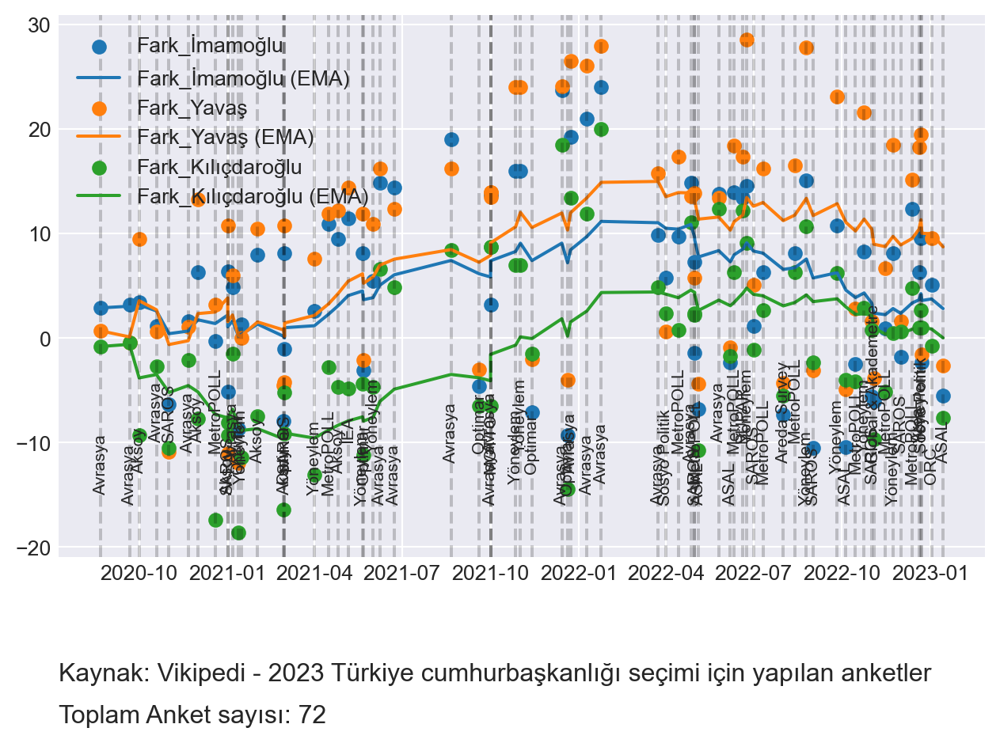

# For web scraping
import requests
from bs4 import BeautifulSoup as bs
# For data manipulation
import pandas as pd
import numpy as np
from datetime import datetime
import matplotlib.pyplot as plt
# style
plt.style.use('seaborn-darkgrid')Recently, there is quite the turmoil in Turkey regarding the Table of Six, the coalition leading the opposition against the ruling Justice and Development Party (AKP). Upon discussions over the coalition’s presidential candidate, the coalition’s second biggest party, IYI Party, announced their withdrawal from the coalition, and the remaining parties are now in a state of uncertainty.
As it stands, there are three potential candidates for the coalition: Kemal Kılıçdaroğlu, the leader of the Republican People’s Party (CHP), Ekrem İmamoğlu, the mayor of Istanbul, and Mansur Yavaş, the mayor of Ankara. The other five parties in the coalition seem to be in favor of Kılıçdaroğlu, but IYI Party’s leader Meral Akşener made it clear that she’d rather have İmamoğlu or Yavaş as the candidate, as the two regarded to be more popular than Kılıçdaroğlu.
It is quite hard to forecast elections in Turkey, as the polls are often wrong, and the election results are often unexpected. However, let’s try our best to analyze the situation with what we have publicly available. Here are the packages we’ll be using:
For today’s web scraping, we’ll be using the Wikipedia page for the election surveys. I will be greedy and scrape all the tables in the page, and then I’ll filter the ones that are relevant to us. Here’s the code:
link = "https://tr.wikipedia.org/wiki/2023_T%C3%BCrkiye_cumhurba%C5%9Fkanl%C4%B1%C4%9F%C4%B1_se%C3%A7imi_i%C3%A7in_yap%C4%B1lan_anketler"
page = requests.get(link)
soup = bs(page.content, "html.parser")
tables = soup.find_all("table", {"class": "wikitable"})Now, we’ll filter the tables that are relevant to us. We’ll be looking for tables that have the following columns:
df_list = []
def get_df(table):
rows = table.find_all("tr")
# Get the header
header = [cell.text.strip() for cell in rows[0].find_all("th")]
# Get the data
data = []
for row in rows:
if row.find_all("td"):
# td or th
d = [cell.text.strip() for cell in row.find_all(recursive=False)]
if len(d) != len(header):
print("Error: ", d)
continue
data.append(d)
df = pd.DataFrame(data, columns=header)
return df
for table in tables:
df_list.append(get_df(table))Error: ['17–20 Eyl', 'MetroPOLL', '2.119', '42,1', '–', '16,9', '22,5', '12,4[no 1]', '–', '–', '–', '–', '–', '–', '–', '–', '19,6']
Error: ['24 Şub', 'Polimetre[no 2]', '–', '38,5', '35,1', '9,3', '–', '8,1', '–', '–', '–', '–', '9,0', '3,4']
Error: ['8 Eki', 'Polimetre[no 2]', '–', '46,2', '34,7', '9,5', '8,4', '–', '–', '–', '–', '1,2', '11,5']
Error: ['Haziran', 'ORC', '–', '56,7[no 3]', '27,7', '8,4', '6,5', '–', '–', '–', '0,5', '0,2', '29,0']Now, we have a list of dataframes, and we can concatenate them into one dataframe:
# Filter the dataframes with 7 columns
df_list = [df for df in df_list if len(df.columns) == 7]
# merge all dataframes based on "Tarih" and "Anket şirketi" columns
for df in df_list:
candidate = df.columns[4].split("\n")[0]
df.columns = df.columns[:3].tolist() + [f'Erdoğan_{candidate}', candidate, f'Kararsız_{candidate}', f'Fark_{candidate}']
print(f'Total number of dataframes: {len(df_list)}')Total number of dataframes: 19Now, we have a dataframe with all the data we need. Let’s take a look at the first five rows:
# row merge dataframes with the same columns
temp = []
for df in df_list:
if df.columns.to_list() in [df2.columns.to_list() for df2 in temp]:
for i in range(len(temp)):
if df.columns.to_list() == temp[i].columns.to_list():
# df2 = pd.concat([df2, df], axis=0)
temp[i] = pd.concat([temp[i], df], axis=0)
else:
temp.append(df)
print(f'Total number of dataframes after merging: {len(temp)}')Total number of dataframes after merging: 7final_df = temp[0]
for d in temp[1:]:
# merge on "Tarih", "Anket şirketi", "Örneklem"
final_df = pd.merge(final_df, d, on=["Tarih", "Anket şirketi", "Örneklem"], how="outer")# function to parse month in Turkish
def parse_month_tr(month):
list_tr = ["Ocak", "Şubat", "Mart", "Nisan", "Mayıs", "Haziran", "Temmuz", "Ağustos", "Eylül", "Ekim", "Kasım", "Aralık"]
return list_tr.index(month) + 1
# tarih means data
def parse_tarih(tarih):
t = tarih
tarih = str(tarih).replace('–', ' ').replace('-', ' ').split()
numbers = [int(e) for e in tarih if e.isdigit()]
words = [e for e in tarih if not e.isdigit()]
temp = []
if len(words) == 1 and numbers:
for j in numbers:
temp.append(datetime(2023, parse_month_tr(words[0]), j))
elif len(words) == 2:
for i,j in zip(words, numbers):
temp.append(datetime(2023, parse_month_tr(i), j))
elif len(words) == 1 and not numbers:
temp.append(datetime(2023, parse_month_tr(words[0]), 1))
temp.append(datetime(2023, parse_month_tr(words[0]) % 12 + 1, 1))
if temp:
return temp
else:
return ['hey', numbers, words, t]
print(f'Unparsed dates: {final_df["Tarih"].apply(lambda x: parse_tarih(x)).apply(lambda x: x[0] == "hey").sum()}')
final_df['Tarih'] = final_df['Tarih'].apply(parse_tarih)
final_df['Başlangıç'] = final_df['Tarih'].apply(lambda x: x[0])
final_df['Bitiş'] = final_df['Tarih'].apply(lambda x: x[-1])
# Orneklem means sample size
def parse_orneklem(orneklem):
if orneklem == "–":
return -1
orneklem = orneklem.replace('.', '').replace(',', '')
if orneklem.isdigit():
return int(orneklem)
else:
return ['hey', orneklem]
final_df['Örneklem'] = final_df['Örneklem'].apply(parse_orneklem)
final_df['Anket şirketi'] = final_df['Anket şirketi'].astype('category')
# For now let's drop Gül, İnce, Babacan, and Akşener
cols_drop = [col for col in final_df.columns if "Gül" in col or "İnce" in col or "Akşener" in col or "Babacan" in col] + ['Tarih']
final_df = final_df.drop(cols_drop, axis=1)
# Reorder columns
cols = ['Başlangıç', 'Bitiş'] + [col for col in final_df.columns if col not in ['Başlangıç', 'Bitiş']]
final_df = final_df[cols]
# drop all rows with NaN values
final_df = final_df.dropna()
def parse_pct(pct):
pct = pct.replace(',', '.')
if pct == "–":
return -1
return float(pct)
info_col = ['Başlangıç', 'Bitiş', 'Anket şirketi', 'Örneklem']
num_cols = [col for col in final_df.columns if col not in info_col]
final_df[num_cols] = final_df[num_cols].applymap(parse_pct)
# Make fark cols negative if Erdoğan has more votes
for cand in ['İmamoğlu', 'Yavaş', 'Kılıçdaroğlu']:
idx = final_df[final_df[f'Erdoğan_{cand}'] > final_df[cand]].index
final_df.loc[idx, f'Fark_{cand}'] = -final_df.loc[idx, f'Fark_{cand}']
final_df.head()
# Fixing the years
real_year = 2023
changed = False
for i in final_df.index[1:]:
if final_df.loc[i, 'Başlangıç'].month == 12 and changed == False:
real_year -= 1
changed = True
elif final_df.loc[i, 'Başlangıç'].month == 1 and changed == True:
changed = False
final_df.loc[i, 'Başlangıç'] = final_df.loc[i, 'Başlangıç'].replace(year=real_year)
final_df.loc[i, 'Bitiş'] = final_df.loc[i, 'Bitiş'].replace(year=real_year)
if final_df.loc[i, 'Bitiş'].month < final_df.loc[i, 'Başlangıç'].month:
final_df.loc[i, 'Bitiş'] = final_df.loc[i, 'Bitiş'].replace(year=real_year + 1)
# sort df with respect to Başlangıç
final_df = final_df.sort_values(by='Başlangıç')
fark_cols = [col for col in final_df.columns if "Fark" in col]
# Scatter plot
fig, ax = plt.subplots()
for col in fark_cols:
# plot the points
ax.scatter(final_df['Başlangıç'], final_df[col], label=col)
# smooth the line
ax.plot(final_df['Başlangıç'], final_df[col].ewm(alpha=0.1).mean(), label=col + ' (EMA)')
for i in final_df.index:
y = -20 + np.random.randint(0, 7)
ax.axvline(final_df.loc[i, 'Başlangıç'], color='black', alpha=0.2, linestyle='--')
ax.annotate(final_df.loc[i, 'Anket şirketi'], (final_df.loc[i, 'Başlangıç'], y), (0, 20), textcoords='offset points', va='bottom', ha='center', fontsize=8, rotation=90)
# annotate source wikipedia
ax.annotate('Kaynak: Vikipedi - 2023 Türkiye cumhurbaşkanlığı seçimi için yapılan anketler', (0,0), (0, -50), xycoords='axes fraction', textcoords='offset points', va='top', fontsize=12)
ax.annotate('Toplam Anket sayısı: ' + str(len(final_df)), (0,0), (0, -70), xycoords='axes fraction', textcoords='offset points', va='top', fontsize=12)
ax.legend()
# tight layout
plt.tight_layout()
plt.show()
# save the plot
fig.savefig('anketler.png', dpi=300, bbox_inches='tight')Unparsed dates: 0